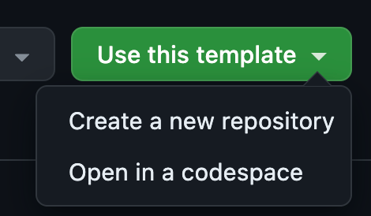
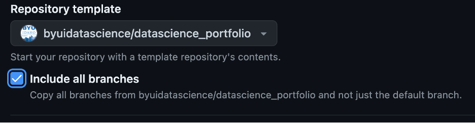
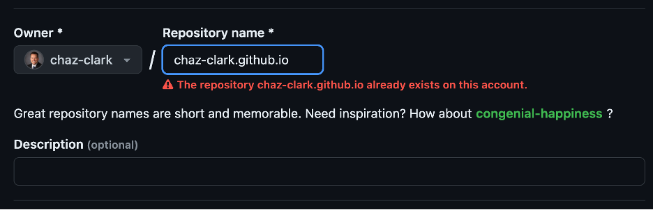
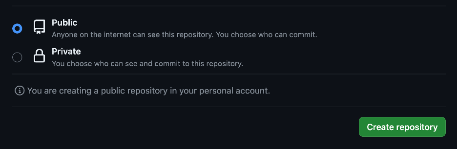
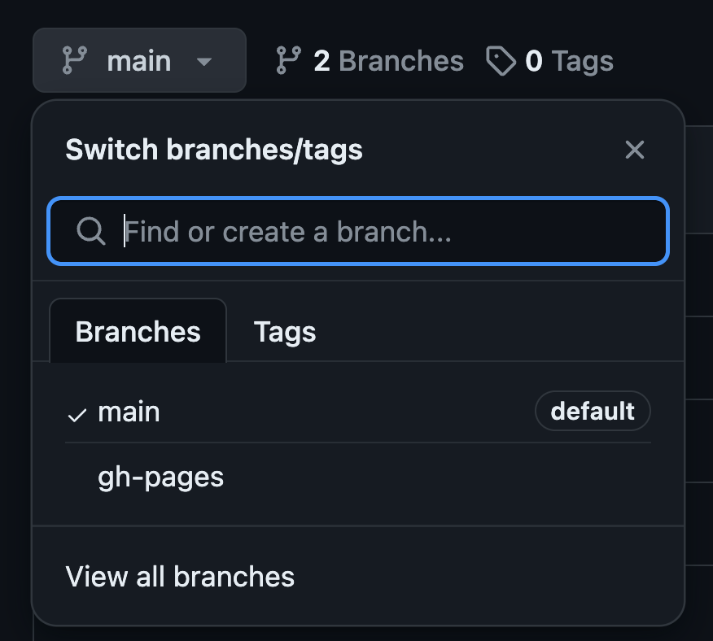
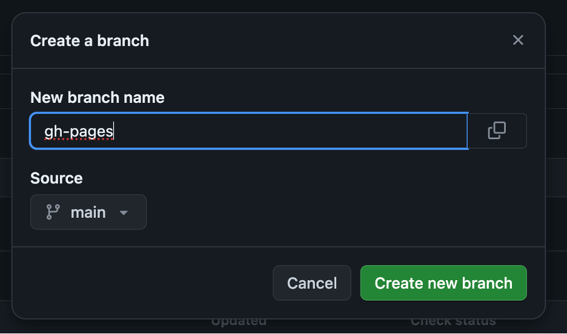
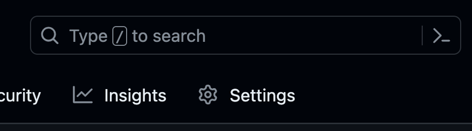
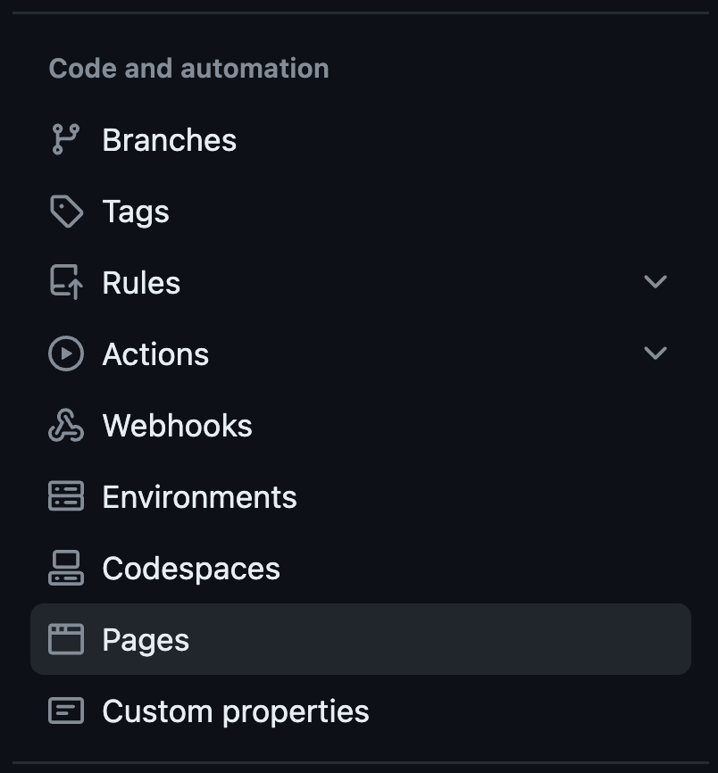
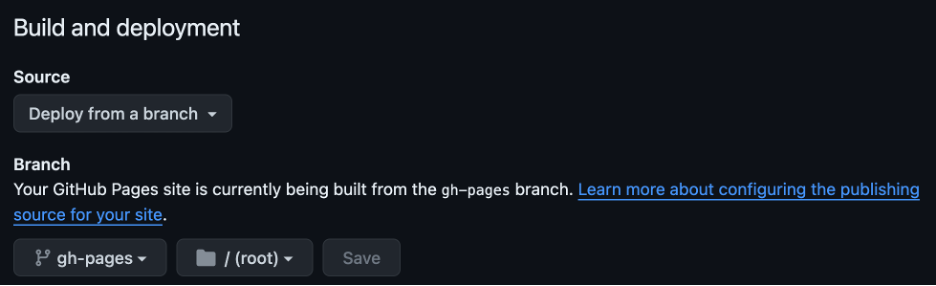
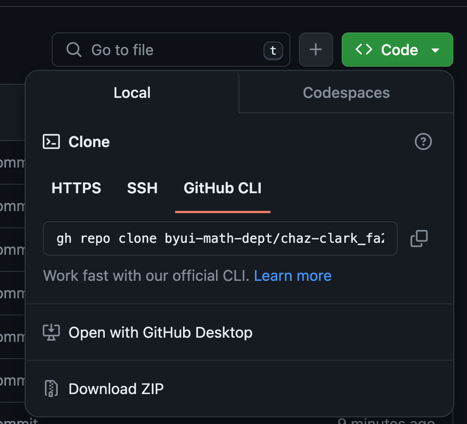

44 Let’s Git Personal
Background
GitHub is an online platform where data scientists and developers can communicate and share work. It has also morphed into a tool to house all your work in a portfolio. Think about an Art student and how they have to develop their portfolio of various skills they have across the art classes. Similarly you will want to showcase you skillset across the Data Science skillsets.
As students, you will want to curate your creative work on GitHub using a program called Git. GitHub is the place to share your original work, not your homework assignments. The reading assignments will dive deeper into what to include in your portfolio and what not to include.
Many people store their personal websites, blogs, and project websites on GitHub. Our textbook and course are hosted on GitHub, and you can see J. Hathaway’s or Ryan Hafen’s personal Data Science websites that are hosted on GitHub as well.
For this project, you will be making a public website that is a data science portfolio hosted by GitHub pages. Your Resume will be one section of your portfolio/website. You should also post Data Science Society projects (ensure you respect NDA’s!), personal projects, and any other data science related work you have done outside of class. Do not post any of the course work in this portfolio.
If you already have a personal repository on GitHub, great! Use this assignment to revisit it, update it, or spruce it up.
Readings
- New to Git and GitHub? This Essential Beginners Guide is for you
- Git vs. GitHub: What is the difference between them?
- Setting up a website using Quarto documents
Optional
Portfolio Resources
Questions and Tasks
There are multiple ways to set-up a website using quarto documents. A succinct synopsis of the 3 ways is found here. We will walk through the first and 3rd ways.
The first option is to “Render sites on your local machine to the docs directory, check the rendered site into GitHub, and then configure your GitHub repo to publish from the docs directory.” This is referred to as Method 1 below. This is the set-up you have been using all semester, so it is likely the method you will feel most comfortable with.
We will show how to do this using a starting template, or from scratch. The 3rd option (also called Method 3) is to “Use a GitHub Action to automatically render your files and publish the resulting content whenever you push a source code (e.g. quarto file) change to your repository”. This will be illustrated using a template file as a starting point.
Choose 1 of the 3 tabs below and follow those instructions for publishing a portfolio website hosted through your own personal GitHub repository. Because you are likely most familiar with Method 1, it is recommended to use that Method for this assignment.
Navigate to the Data Science Portfolio2 repo in GitHub
Click the green button ‘Use this template’ and select ‘Create a new repository’
a. Select yourself as owner
b. Pick a professional name (potential employers will be seeing this)
c. Choose ‘public’
d. Click ‘create repository’
Copy the url of the GitHub repo. You’ll need this when we return to R Studio
Modify ‘Pages’ Setting for build and deployment from \docs folder
a. Click the Settings tab
b. Scroll down to the Pages section on the left hand menu
c. Change the branch option from “none” to “main” (or “master”), and change the folder next to it from “/(root)” to “/docs”. Don’t forget to click ‘Save’!
d. Wait a couple of minutes and refresh your page. There should now be a url address to the website and a link that says “Visit Site”. This is the url address to your home page! You will want to come click on that later to access the website at the end of this process.
Now go to R Studio
Clone the GitHub repository to your local machine
a. Go to the File menu, select “New Project”. Select “Version Control”, and then “Git”.
b. You are prompted to paste the url to the GitHub repository.
- You are also asked where to store it. Create a new folder that does not reside within any other projects or GitHub repo folders. You can now select “Create Project”.
You can now make changes to any of the pages, delete pages, or add pages. Be sure to render or preview the pages you made changes to. This will create the .html file the website needs and store it in the docs folder.
Note: If you make changes to the menu options along the top or side of the website by editing the _quarto.yml file you will need to render the entire website (since those options are on every page). To do that, type `quarto render` in the terminal. Alternatively, from the “Build” tab (which is located in the upper right pane by default), select “Render Book”.
We will now implement the “pull, add, commit push” workflow in RStudio to send our local files to GitHub. To do this, go to the terminal and type the following commands:
git pull
git add .
git commit -m”a message of your choice”
git push
Now let’s return to GitHub to see the “finished” product!
It may take a minute, but when you return to the website (see step 4d), any changes you made should be visible.
From within R Studio, go to File -> New Project, then choose New Directory, then choose Quarto Website.
You will need to decide where to create the project. Pick (or create) a new folder that does not reside within any other projects or folders associated with GitHub repos. Then select that folder as the one to open
Leave the Engine as Knitr.
Check the box for “Create a git repository”
Create a new folder in your project and call it “docs”.
At the beginning of the semester we initialized and installed git, we connected RStudio to GitHub, and installed the “usethis” package. If, for some reason, you haven’t done those things by now, make sure they are done.
In your RStudio console, run
usethis::use_git(). Say “yes” if it asks you about committing or connecting.Then, run
usethis::use_github(). This will create a new repository on GitHub and automatically connect it to your local project, pushing your initial commit. Note that this new repository will be under your own personal GitHub account, not within the school’s organization like your classwork repo is.Render the index.qmd file. As it renders, it will create a folder called
_siteand putindex.htmlinside of it.Change the name of the
_sitefolder todocs.
Now within your newly created repository
Modify ‘Pages’ Setting for build and deployment
a. Click the Settings tab
b. Scroll down to the Pages section on the left hand menu
c. Change the branch option from “none” to “master”, and change the folder next to it from “/(root)” to “/docs”. Don’t forget to click ‘Save’!
d. Wait a few minutes and refresh your page. There should now be a url address to the website and a link that says “Visit Site”. This is the url address to your home page! Click on it and check it out!
You are now essentially done. You can return to R Studio where you can add new pages, adjust the _quarto.yml, etc. When you create a new .qmd file in the top level of the directory, then render it, the resulting .html version of the file will be placed in the docs folder. Continue on as normal with pulling, adding, committing and pushing.
NoteTo see other files (besides index) put the file name or path at the end of the url. (Remember, it starts in the docs folder)
NOTE: If you make changes to the _quarto.yml file, you will need to rebuild the website by running `quarto render` in the terminal before pushing to GitHub. Quarto render will rebuild every webpage on your site.
Git a Data Science Portfolio in GitHub (main page)
Use the Portfolio Template on your Githhub root directory
- Navigate to the Data Science Portfolio repo in GitHub. Note: This is a different template than what was used in the other 2 methods. It is set-up to work with GitHub actions, not publishing through the docs folder. Essentially, this will render your .qmd file in the cloud instead of locally. For quick changes, this can be a much slower process because it has to install R and all the packages each time. If you have a very large job though, it can be more effective to use GitHub’s computing power instead of your own local machine.
- Click the Green Button
Use this templateand selectCreate a new repository

- Click
include all branchescheckbox, this will include thegh-pagesbranch

- Select yourself as the
Owner

- Name the repository as
username.github.iowhere the username is your username on GitHub (Note: If theusernamepart of the repository doesn’t exactly match your username, it won’t work, so make sure to get it right.) - Click the Green Button
Create repository

Create a new branch
gh-pagesif you forgot to check theinclude all branchesbox (skip otherwise)- Click the
Branch: mainbutton thenview all branches

- Click the
New Branchbutton
- Name the branch
gh-pagesand click the Green ButtonCreate new branch

- Click the
Modify Pages Settings for Build and deployment from
maintogh-pages:- Click the
Settingstab

- Scroll down to the
Pagessection in the left hand menu

- Locate the Build and deployment section and change Branch from
maintogh-pagesand leave the right side as/root

- Click the
Clone the repository to your computer
Click the
<> CodemenuClick the Green Button
<> Codeand select the copy icon for the url.

Now return to RStudio
Clone the GitHub repository to your local machine
a. Go to the File menu, select “New Project”. Select “Version Control”, and then “Git”.
b. You are prompted to paste the url to the GitHub repository.
- You are also asked where to store it. Create a new folder that does not reside within any other projects or GitHub repo folders. You can now select “Create Project”.
The website will work, but in order for R code to render you need to make a couple of additional changes
- Open the publish.yml file. It is in the .github\workflows folder.
- Remove the extra hashtag at the beginning of lines 33 through 45. This will uncomment the code. These lines of code tell GitHub which version of R to install and what packages to install. If you need additional packages, you will have to add them after line 45
You can now make changes to any of the pages, delete pages, or add pages with our typical pull, add, commit and push workflow. You can, but aren’t required to render or preview the pages you made changes to before pushing.
Note: If you make changes to the menu options along the top or side of the website by editing the _quarto.yml file you will need to render the entire website (since those options are on every page). To do that, from the “Build” tab (which is located in the upper right pane by default), select “Render Book”.
Put your Resume online
- Update the
resume.qmdfile located at the top level folder with information about you. It doesn’t have to be fancy, just make sure it is stuff about you and not Isaac Newton. See Chap 29 in the R for Data Science book - Push your results to GitHub. Then go online to verify it was successful.
Deliverables
Submit a URL link to your resume as a webpage hosted on GitHub pages.